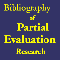

|  |
Partial Evaluators for Java and Object-Oriented Languages
- Ulrik Pagh Schultz. "Object-Oriented Software Engineering using Partial Evaluation". PhD. Thesis. Université de Rennes 1. December 2000. Available online: ps pdf. Citation.
- Julia L. Lawall and Gilles Muller. "Efficient Incremental Checkpointing of Java Programs". INRIA Research Report RR-3810. November 1999. Available online: ps pdf. Citation.
- Ulrik Pagh Schultz, Julia L. Lawall and Charles Consel. "Automatic Program Specialization for Java". Transactions on Programming Languages and Systems (TOPLAS). 25(4). 2003. Available online: pdf. Citation.
- Ulrik Pagh Schultz, Julia L. Lawall and Charles Consel. "Automatic Program Specialization for Java". University of Aarhus. DAIMI PB-551. November 2000. Available online: ps pdf. Citation.
- Ulrik Pagh Schultz. "Partial Evaluation for Class-Based Object-Oriented Languages". PADO-II. May 2000. Available online: ps pdf. Citation.
- Ulrik Pagh Schultz. "Partial Evaluation for Class-Based Object-Oriented Languages". University of Aarhus. DAIMI PB-552. November 2000. Available online: ps pdf. Citation.
- Ulrik Pagh Schultz, Julia L. Lawall, Charles Consel and Gilles Muller. "Toward Automatic Specialization of Java Programs". European Conference on Object-Oriented Programming (ECOOP '99). June 1999. Available online: ps pdf. Citation.
- Ulrik Pagh Schultz, Julia L. Lawall, Charles Consel and Gilles Muller. "Toward Automatic Specialization of Java Programs". IRISA Research Report 1216. December 1998. Available online: ps. Citation.
- Morten Marquard and Bjarne Steensgaard. "Partial Evaluation of an Object-Oriented Imperative Language". Masters Thesis. DIKU, University of Copenhagen. April 1992. Available online: ps pdf. Citation.

Last modified: Monday, February 16th, 2009 6:22:09pm
HTML generated using WebIt!.
HTML generated using WebIt!.